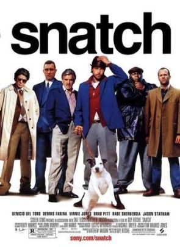

Snatch. (2000)
 Director: Guy Ritchie
Writer: Guy Ritchie
Rating IMDB: 8,3/10
Running time: 104 minutes
Country: United Kingdom
Genres: Comedy, Crime
Slogan: "Stealing stones is hazardous."
Motion Picture Rating (MPAA): R for strong violence, language and some nudity
Storyline
Turkish and his close friend/accomplice Tommy get pulled into the world of match fixing by the notorious Brick Top. Things get complicated when the boxer they had lined up gets badly beaten by Pitt, a 'pikey' ( slang for an Irish Gypsy)- who comes into the equation after Turkish, an unlicensed boxing promoter wants to buy a caravan off the Irish Gypsies. They then try to convince Pitt not only to fight for them, but to lose for them too. Whilst all this is going on, a huge diamond heist takes place, and a fistful of motley characters enter the story, including 'Cousin Avi', 'Boris The Blade', 'Franky Four Fingers' and 'Bullet Tooth Tony'. Things go from bad to worse as it all becomes about the money, the guns, and the damned dog!
Cast
- Benicio Del Toro ... Franky Four Fingers
- Dennis Farina ... Cousin Avi
- Vinnie Jones ... Bullet-Tooth Tony
- Brad Pitt ... Mickey O'Neil
- Rade Serbedzija ... Boris the Blade
- Jason Statham ... Turkish
- Alan Ford ... Brick Top
- Mike Reid ... Doug the Head
- Robbie Gee ... Vinny
- Lennie James ... Sol
- Ewen Bremner ... Mullet
- Jason Flemyng ... Darren
- Ade ... Tyrone
- William Beck ... Neil
- Andy Beckwith ... Errol
Produced
- Michael Dreyer ... co-producer
- Stephen Marks ... executive producer
- Peter Morton ... executive producer
- Angad Paul ... executive producer
- Sebastian Pearson ... associate producer
- Taha Ali Reza ... associate producer
- Trudie Styler ... executive producer
- Steve Tisch ... executive producer
- Matthew Vaughn ... producer